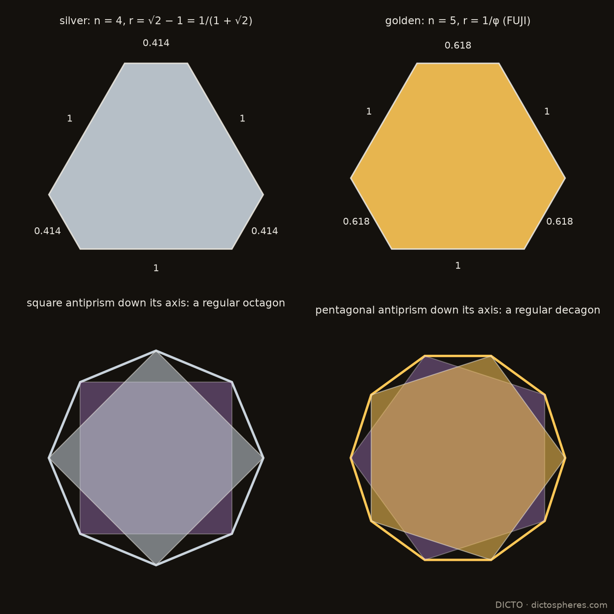
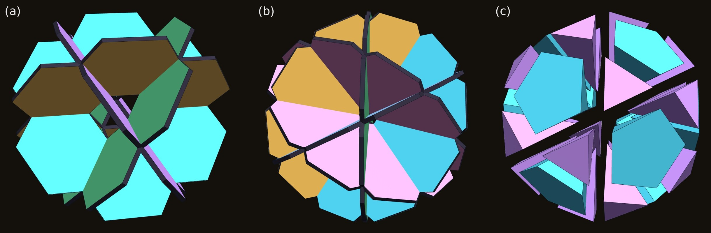
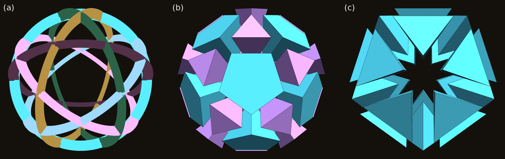

Pyramids on flat-ended triangles: from the tetrahedron through FUJI to the flat hexagon, the antiprism theorem, and the members found in tilings, crystals and our sculpture
FUJI is the hexagonal pyramid that closes the corners of our thirteen-icosahedron cluster, the Lotus seed [1]. Its base is a flat-ended triangle: a hexagon with all angles 120° and sides 1 and 1/φ alternating. The same shape kept turning up elsewhere, in our cuboctahedral PET-bottle spheres and in the colouring of the Lotus seed, so we asked whether FUJI belongs to a family.
It does. Put an apex over a flat-ended triangle with sides 1 and r, with all six side edges of length 1. This gives a one-parameter family FUJI(r), running from the regular tetrahedron (r = 0) through FUJI (r = 1/φ) to the flat regular hexagon (r = 1). We derive the base angles and prove:
The members turn up in several places:
FUJI was found as a gap piece. In the Lotus seed, twelve icosahedra round a small one, the corners where three icosahedra meet are filled by a hexagonal pyramid with all six side edges 1, which we named after Mount Fuji [1]. It is not made of the Mosseri–Sadoc tiles [Papadopolos and Ogievetsky 1999; Koca et al. 2020] that make its partners AXE and CLEO.
Its base had appeared before. Building cuboctahedral spheres of PET-bottle ports, we wanted sharp equilateral triangles round the ports and settled for blunted, flat-ended ones. Colouring the Lotus seed, we hoped for regular hexagons and found the same flat-ended triangles. Our DeltaZip and B1NR sculptures use rounded triangles, the curved form of the same idea.
Figure 1. Our sculptures. (a) DeltaZips: deltahedra built from rings tied with zip ties, each ring a rounded triangle. (b) Thirteen dictospheres joined, twelve round one. (c) A dictosphere design, with caps on some of its ports. Photographs and design: DICTO.
The same outline appears at the centre of the DeltaZips logo: the recycling symbol's three arrows make a triangle with its corners taken off.
This paper takes FUJI's shape as the starting point of a family (Section 2), finds its bases in a classical construction (Section 3), proves which member belongs to which antiprism (Section 4), and follows the members into tilings, crystals and our sculpture (Section 5).

Figure 2. FUJI(r) at one scale, all side edges 1: the tetrahedron (r = 0), r = 1/4, r = 1/2, FUJI (r = 1/φ), r = 0.8 and the flat hexagon (r = 1). Darker faces: the three equilateral triangles; lighter: the three isosceles triangles 1, 1, r.
The base. A flat-ended triangle with sides 1 and r is a big equilateral triangle of side 1 + 2r with an equilateral corner of side r cut off at each corner. In the literature it is the isogonal hexagon or truncated triangle t{3}. All six corners lie on one circle, of radius² (1 + r + r²)/3. So an apex at height h over the centre has all six side edges equal, and they are 1 when
h² = (2 − r − r²)/3.
The volume is (√3/12)(1 + 4r + r²) h. The side faces are three equilateral triangles (on the long sides) and three isosceles triangles 1, 1, r (on the short sides), with apex angle 2 arcsin(r/2).
The base angles (proofs in the appendix):
cos L = (1 + 2r)/3 on the long sides, cos² S = (2 + r)/(3(2 − r)) on the short sides.
| r | member | height | angle L | angle S | side faces |
|---|---|---|---|---|---|
| 0 | regular tetrahedron | √(2/3) | 70.53° | –* | four equilateral |
| 1/4 | 3/4 | 60° | 49.11° | ||
| 1/2 | 0.6455 | 48.19° | 41.81° | ||
| 1/φ | FUJI | 1/√3 | 41.81° | 37.38° | isosceles faces are golden triangles (36°) |
| 1 | flat | 0 | 0 | 0 | six equilateral triangles in one plane |
*At r = 0 the short sides vanish, so S is undefined (the formula's limit, 54.74°, has no face to measure).
Two of the angles are the same angle, 41.81° = arccos(√5/3). In the Lotus seed this is the gap two icosahedra leave either side of a shared edge. It appears as FUJI's long-side angle and as the r = 1/2 member's short-side angle. The formulas show why: cos² L = 5/9 exactly at r = 1/φ, and cos² S = 5/9 exactly at r = 1/2.

Figure 3. Extend each side of the gold triangle by e at both ends: the six ends make a flat-ended triangle with sides e and 1 + e. With e = φ (right) it is FUJI's base.
George Odom found the golden ratio in the equilateral triangle [Odom and van de Craats 1983]. A related construction, published as the Wolfram Demonstration "Hexagons and the Golden Ratio" after Odom, extends each side of an equilateral triangle by the golden ratio at both ends; the six outer points form a hexagon whose two side lengths are in the golden ratio. This golden hexagon is FUJI's base. (Odom's own construction, Problem E3007, is a different one: the line through two side midpoints of an equilateral triangle, extended to the circumcircle.)
Rebuilt here for any extension e, the six points always form an equiangular hexagon with sides e and 1 + e: a flat-ended triangle with r = e/(1 + e). So the same construction, with extension e, gives every member with r < 1 (the flat hexagon, r = 1, would need e infinite). This is a change of parameter, not a new result. The extension e = 1 gives r = 1/2, the base of the member in Section 5.2.

Figure 4. The member that matches each antiprism: r = 2 cos(π/n) − 1. FUJI is the five-fold member.
In the Lotus seed, FUJI's base lies in one plane with the icosahedron triangles on its long sides: 41.81° + 138.19° = 180°. We call this the face-plane condition: FUJI(r) is glued by one of its equilateral faces to a unit triangle of a solid X, and its base continues the plane of the face of X across that triangle's edge, so that L + D_X = 180°, where D_X is X's dihedral angle at that edge. The edge is between two triangles for the icosahedron, the octahedron and the antiprisms (their triangle–triangle edges), and between a triangle and a square for the cuboctahedron and the rhombicuboctahedron, where the base continues a square. The condition holds when
r = (−3 cos D_X − 1)/2.
| Solid (edge, dihedral angle) | member r |
|---|---|
| icosahedron (and the pentagonal antiprism, its middle), triangle–triangle (138.19°) | 1/φ: FUJI |
| cuboctahedron, triangle to square (125.26°) | (√3 − 1)/2 |
| square antiprism, triangle–triangle (127.55°) | √2 − 1 |
| rhombicuboctahedron, triangle to square (144.74°) | (√6 − 1)/2 |
| octahedron = triangular antiprism, triangle–triangle (109.47°) | 0, the tetrahedron |
Proposition 1. For the n-gonal antiprism with unit edges, the member meeting the face-plane condition at a triangle–triangle edge is r = 2 cos(π/n) − 1. Equivalently, 1 + r = 2 cos(π/n), the short diagonal of the regular n-gon with unit sides (for n = 3, its side).
The antiprism's dihedral angle, cos D_n = (1 − 4 cos(π/n))/3, is standard (it is listed for single antiprisms in the OEIS); the proposition combines it with the base-angle formula, so the new content is one line of algebra.
Proof (outline; the dihedral computed in full in the appendix). Place the antiprism's corners at T_k = (R cos 2kθ, R sin 2kθ, h) and B_k = (R cos (2k + 1)θ, R sin (2k + 1)θ, −h), with θ = π/n and R = 1/(2 sin θ). The two equilateral triangles on the side edge T₀B₀ have their third corners T₁ and B₋₁, each √3/2 from the edge's midpoint M. A short computation gives (T₁ − M)·(B₋₁ − M) = −(4 cos θ − 1)/4. So cos D_n = (1 − 4 cos(π/n))/3, and r = (−3 cos D_n − 1)/2 = 2 cos(π/n) − 1. ∎
The antiprisms therefore index the family by the n-gon's short diagonal:
Golden and silver. The members for n = 4 and n = 5 are the inverses of the two best-known metallic means. For n = 5, r = 2 cos 36° − 1 = φ − 1 = 1/φ, the golden ratio's inverse: FUJI. For n = 4, r = 2 cos 45° − 1 = √2 − 1 = 1/(1 + √2), the inverse of the silver ratio 1 + √2. Both are short diagonals: 1 + 1/φ = φ, the pentagon's diagonal, and 1 + (√2 − 1) = √2, the square's. So FUJI has a silver sister one step down the same formula, on the square antiprism, and seen down its axis that antiprism's outline is the regular octagon, as the pentagonal antiprism's is the regular decagon (Figure 5). The family has square and pentagonal cousins. For k = 3, 4, 5, …, a flat-ended k-gon is a regular k-gon with its corners cut: an equiangular 2k-gon with sides 1 and r alternating. With all side edges 1 the long faces are equilateral, and cos L = (1 + r/cos(π/k))/(√3 tan(π/k)). The pyramid lies flat at r = 2 sin(π/k − π/6), which is 1, 2 sin 15° and 2 sin 6° for k = 3, 4, 5, and 0 or less from k = 6 on, where the regular unit hexagon is already flat. So there are families only for k = 3, 4 and 5. The square family's member on the rhombicuboctahedron (triangle–square edge) is r = 1 − 1/√2. Whether the silver members connect to octagonal quasicrystals (Ammann–Beenker tilings, inflation factor 1 + √2) we leave open.

Figure 5. The silver member (n = 4, r = √2 − 1) and the golden member FUJI (n = 5, r = 1/φ): their flat-ended triangles (above), and, separately, their antiprisms seen down the axis, whose outlines are the regular octagon and decagon (below).
The Lotus seed is a regular icosahedron of edge φ², exactly: 12 icosahedra, a small centre, 60 AXE, 20 FUJI and 20 CLEO, or our 63-piece build of a dodecahedron, 12 J11, 30 AXE and 20 FUJI [1]. Each of its 20 big faces is three icosahedron triangles and one FUJI base. FUJI is the five-fold member of the family, which is consistent with its place in the icosahedron (the face-plane condition is necessary, not sufficient, for a cluster to close).
Damasceno, Engel and Glotzer studied truncated tetrahedra from the tetrahedron to the octahedron, and found that the member at truncation t = 1/2 fills space on its own [Damasceno et al. 2012]. Its four hexagons have sides in the ratio 2 : 1 (checked from their published corners): they are the r = 1/2 member's base, the e = 1 hexagon of Section 3.

Figure 6. The Golden Breathing Pyrochlore world in the Kaleidohedra app. (a) Big (gold) and small (purple) tetrahedra meet tip to tip, with see-through truncated tetrahedra between them. (b) One kagome layer: every hexagon is FUJI's flat-ended triangle.
A pyrochlore is a network of tetrahedra sharing corners: every corner belongs to one "up" and one "down" tetrahedron, tip to tip. In a breathing pyrochlore the two sets have different sizes, edge 1 and edge r. Such materials exist among the chromium spinel oxides [Okamoto et al. 2013]. Every kagome hexagon then has sides 1 and r alternating, with all angles 120°: the flat-ended triangle with the breathing ratio as its r.
The space between the tetrahedra is filled by two kinds of truncated tetrahedra, both with flat-ended-triangle hexagons. The tetrahedra and truncated tetrahedra fill space for every r. This is a Wythoff construction [Coxeter 1973]: in the affine group Ã₃ (whose diagram is a square), ring two adjacent nodes at distances d₀ and d₁; the cells are two tetrahedra, with edges in the ratio r = d₁/d₀, and two kinds of truncated tetrahedra (the quarter cubic honeycomb at r = 1). Wythoff's construction gives a tiling for any generating point in the fundamental simplex, not only the uniform one; here the point runs along the edge where the other two mirrors meet, so r takes every value. We also checked volumes, faces and neighbours numerically for r = 0.2, 0.382, 0.5, 0.618, 0.8 and 1. As r tends to 0 the small tetrahedra shrink to points, one kind of truncated tetrahedron becomes an octahedron and the other a tetrahedron, and the crystal becomes the tetrahedral–octahedral honeycomb. The two kinds of truncated tetrahedra share the same hexagon and are twin members of Damasceno's truncation family, one on the tetrahedron's side and one on the octahedron's. So the breathing pyrochlore is the FUJI family made into a crystal:
It can be built cell by cell in the Kaleidohedra app, with a slider for the breathing ratio.

Figure 7. (a) The ideal dictosphere: each point of the sphere belongs to its nearest port. The curved squares (cyan) and curved flat-ended triangles (wisteria) meet short side to short side. (b) The flat counterpart: the solid whose 14 faces all touch the sphere, whose triangles are the cuboctahedral member r = (√3 − 1)/2.
A dictosphere is a sphere. It carries 14 PET-bottle ports in a cuboctahedral arrangement: 6 on the cube axes (the squares) and 8 on the three-fold axes (the triangles). We divide its surface round the ports into squares and triangles. With ports in both, the triangles' corners crowded the neighbouring holes, so we truncated the triangles to give even space round every port. The truncated triangles meet short side to short side.
Even space fixes the pattern. On a sphere, with all ports the same size, an even margin round every port means that each point of the surface belongs to its nearest port. The squares and triangles are then the regions of the sphere nearest each port. Their boundaries are arcs of great circles halfway between neighbouring ports, and the triangles come out as curved flat-ended triangles. Projected from the centre onto flat planes, the same pattern is the solid whose 14 faces all touch one inner sphere (Figure 7b): the cube ∩ octahedron with both sets of faces at the same distance. Its flat-ended triangles are exactly the cuboctahedral member, r = (√3 − 1)/2 = 0.366. (The same rule in the flat: across an edge shared by two faces, the clearances from the two face centres to the edge are equal exactly when the faces lie at the same distance from the centre.)
Why the cuboctahedral member. Take the solid |x|, |y|, |z| ≤ 1, |x| + |y| + |z| ≤ S, and put an apex at the cube's corner (1, 1, 1) over the triangle on x + y + z = S. For 3/2 < S < 2 (where the triangles' long sides face the squares), its six side edges are all √((2 − S)² + 1), and its three long faces lie in the cube's faces. Those faces are equilateral exactly when 2(S − 1)² = (2 − S)² + 1, that is S² = 3, which is the equal-depth solid. So the even-margin rule and the cuboctahedral member are the same condition: at equal depth, the cube's eight corners are exactly the apexes of copies of FUJI((√3 − 1)/2), scaled by √2(√3 − 1) ≈ 1.035, standing on the eight triangles. The cuboctahedron's member rests on the same angle: in each case a long face and the base lie in a cube plane and an octahedron plane, so L = 54.74° and r = (√3 − 1)/2.
The ideal and the made object. Dictospheres are made by hand, so they are not precise enough to measure the ratio; we use the ideal one, defined by its design rule. On the sphere, its curved triangles have sides in the ratio r = 0.356 (as arcs); in its flat counterpart, r = (√3 − 1)/2 = 0.366. Our hand measurements, about 4 cm and 1.5 cm, are consistent with both.
Building with them. The 14 port directions are the directions of a rhombic dodecahedron's 14 corners, and every edge of a rhombic dodecahedron runs along a three-fold axis. So dictospheres joined triangle port to triangle port build rhombic-dodecahedron frames, which fill space, as we build them.
The truncated octahedron is the r = 1 member of the same cube–octahedron pattern, with regular hexagons. Every member of the flat family has the same dihedral angles (109.47° and 125.26°), but only the truncated octahedron, whose hexagons are centrally symmetric, fills space by translation (Kelvin's cell). It is to the dictosphere's pattern what the regular hexagon is to FUJI: the symmetric shape at r = 1.

Figure 8. (a) Four hexagonal wheels of flat-ended triangles (drawn with FUJI's, r = 1/φ; any r > 0 works), overlapped into the cuboctahedron's outer structure. (b) Six decagonal wheels of golden triangles, the icosidodecahedron's. (c) The CLEO sphere pulled apart: 20 CLEOs (wisteria) and 12 pentagonal pyramids (cyan), all tips at the centre.
Our DeltaZip wheels led to a construction in the same spirit. A cuboctahedron's 24 edges split into four regular hexagons, one in each of its four central planes; a wheel of six triangles in each plane (centre to rim), with every triangle blunted into a flat-ended triangle, gives four wheels that overlap into the cuboctahedron's outer structure (Figure 8a). Each spoke is shared by two wheels, and the blunted corners keep the hub and the twelve crossings clear. Four is the most, if every two wheels meet along a different spoke: a wheel with 2m spokes has m spoke lines, each crossing wheel uses one of them, so n wheels need n − 1 ≤ m. Hexagonal wheels (m = 3) allow at most four, decagonal (m = 5) at most six, square (m = 2) at most three; at the maximum every spoke line lies in exactly two wheels. These maxima are attained by the equatorial great circles of the octahedron, the cuboctahedron and the icosidodecahedron, the classical quasi-regular polyhedra [Coxeter 1973]. (Planes through a single common line meet in any number, but all along the same spoke.) The octagonal case in between is impossible: five such circles would form the one simple arrangement of five great circles (no three through a point), whose triangles, all sides 45°, have angles 65.53°, forcing the central pentagon's angles to 114.47°, while an equilateral spherical pentagon of side 45° with equal angles has angles 122.25°. The icosahedral counterpart has six wheels, in the planes square to the five-fold axes, each a decagon of ten golden triangles (sides φ, φ, 1): the icosidodecahedron's six great decagons (Figure 8b).
The six wheels cut the icosidodecahedron into pieces with their tips at the centre. With edge 1/φ the icosidodecahedron has circumradius exactly 1, so each piece over a triangle has an equilateral base 1/φ and side edges 1: it is CLEO. Twenty CLEOs pointing inwards and twelve pentagonal pyramids (side edges 1, base edge 1/φ, volume √5/12 each) fill the icosidodecahedron exactly, volume (11√5 − 5)/6 (Figure 8c). It is the icosahedral twin of the four hexagonal wheels cutting the cuboctahedron into 8 regular tetrahedra and 6 square pyramids.
Each pentagonal pyramid divides about its axis into five congruent right-angled triangular pyramids, each with one golden face (1, 1, 1/φ, the same as CLEO's side faces), a base triangle with sides 0.5257, 0.5257 and 1/φ (72° at the centre of the pentagon), and volume √5/60. Equilateral CLEOs themselves cannot fill the pentagonal pockets (a pentagon cannot be tiled by equilateral triangles); these five are the pocket's own CLEO-like pieces. CLEO cannot fill an icosahedron from its centre on its own: its tip angles are 36°, where 20 pieces closing a sphere need 63.4°, so twenty CLEOs cover only about 29% of the directions round the centre. The pentagonal pyramids take the rest.

Figure 9. (a) Six equal slotted rings in the planes square to the five-fold axes, seen down a five-fold axis. (b) The CLEO sphere they frame, seen the same way: 20 CLEOs in the triangular windows, 12 pentagonal pockets. (c) Faceted flat across the pentagon centres: 20 Icosahedral Cleo filling an icosahedron.
How many crossed circles make an icosahedron? Four make the cuboctahedron, and four is the most that meet in that way (Section 5.5). Six circles, one in each plane square to a five-fold axis, cross every 36° round each circle and divide the sphere into 20 triangles and 12 pentagons, the icosidodecahedron's pattern. The icosahedron is there, though the circles never draw its edges: its 12 corners are the centres of the 12 pentagonal windows, and its 20 faces lie over the 20 triangular windows. Six equal flat rings slotted together, alternately from the outside and the inside at each crossing, are all identical (one template, cut six), which is how our six-ring DeltaZip balls go together. An alternating slot pattern exists for any set of great circles with no three through one point, since their crossings then form a four-valent map (as in alternating knot diagrams); here the equal crossing angles (63.43°) and equal spacing (36°) make the six rings identical.
The pieces complete the route. The triangular windows hold the 20 CLEOs pointing inwards; each pentagonal window holds five Penta-cleo (Section 5.5). Each CLEO with the three Penta-cleo on its golden sides fills the part, inside the icosidodecahedron, of one face-cone of the icosahedron whose corners are the pentagon centres. Cutting flat across the three pentagon centres removes the parts outside that icosahedron (CLEO's outer corners are at radius 1, beyond the icosahedron's corners at 0.851), and leaves the Icosahedral Cleo: the icosahedron's central pyramid on one face, tip at the centre and flat base outside, side edges 0.851 and base edge 2/√5 = 0.894. Twenty of them make the icosahedron, as the central pyramids of any solid make that solid; the point is the route, not the dissection. Six circles, then, lead to the icosahedron in a roundabout way: through the icosidodecahedron and the CLEO sphere.
The icosahedron, filled or not, still does not fill space (its dihedral angle 138.19° leaves 41.81° gaps), and the twenty pieces alone do not either: their dihedral angles are 72° along the side edges (five close round a line through the centre) and 69.09° along the base edges, and no combination that includes a base edge, with 72° angles and flat 180° faces, makes 360°. In space, icosahedral shapes need partner pieces, as AXE and FUJI are to the Lotus seed.
The base shape (the isogonal hexagon), the antiprism angles (listed for single antiprisms in the OEIS), the golden hexagon after Odom, the space-filling truncated tetrahedron and breathing pyrochlores are all known, and are credited above. Our searches (14 October 2026: our reference library, web searches for the family, its base-angle formulas, flat-ended or isogonal hexagonal pyramids, and antiprism dihedral relations, and the OEIS) did not find the following. That is a report of what we searched, not a claim that they are unknown. The base-angle formulas are elementary, and the hexagons with alternating sides are standard in breathing kagome lattices; what we offer is the family as one object, and the links between its members:
The family gives one shape and one parameter to things found separately:
In each, the parameter r is set by a different symmetry: five-fold for FUJI, cubic for the dictosphere's ports, the breathing ratio for the pyrochlore.
Base angles. The long side lies along a side of the big triangle (side s = 1 + 2r), so its distance from the centre is s/(2√3). The equilateral face on it has slant height √3/2, which gives cos L = (1 + 2r)/3. A cut line lies at distance s/√3 − r√3/2 = (2 + r)/(2√3), and the isosceles face on it has slant height √(1 − r²/4), which gives cos² S = (2 + r)/(3(2 − r)).
Antiprism dihedral. With c = cos θ and s = sin θ, unit side edges give h² = (1 + 2c)/(8(1 + c)). Writing M = (R(1 + c)/2, Rs/2, 0):
With R² = 1/(4(1 − c)(1 + c)), their dot product is
[(4c + 3)(1 − c) − 3(4c − 1)(1 + c) − 2(1 + 2c)] / (16(1 + c)) = −(4c − 1)/4.
So cos D_n = (1 − 4c)/3, the standard antiprism dihedral. The numerical check, n = 3 to 12, agrees to 10⁻¹² (study scripts and an independent review).
The dictosphere's member. Corner A = (1, 1, 1); the triangle on x + y + z = S has corners such as (1, S − 1, 0) (after the cube cuts it) at distance √((2 − S)² + 1) from A, the same for all six. For 3/2 < S < 2, the long face A, (1, S − 1, 0), (1, 0, S − 1) lies in x = 1 and has the base edge (S − 1)√2; it is equilateral when 2(S − 1)² = (2 − S)² + 1, i.e. S² = 3.
FUJI, the Lotus seed, the dictospheres, the DeltaZips and B1NR sculptures, the term "flat-ended triangle" and the names are DICTO's. Odom's work, the golden-hexagon construction after it, the space-filling truncated tetrahedron (Damasceno, Engel and Glotzer) and the breathing pyrochlore (Okamoto, Nilsen, Attfield and Hiroi) are credited to their authors. Data, scripts, proofs and checks: studies/2026-10-14-fuji-family at https://github.com/DICTOR-Master/kaleidohedra.
DICTO · dictospheres.com